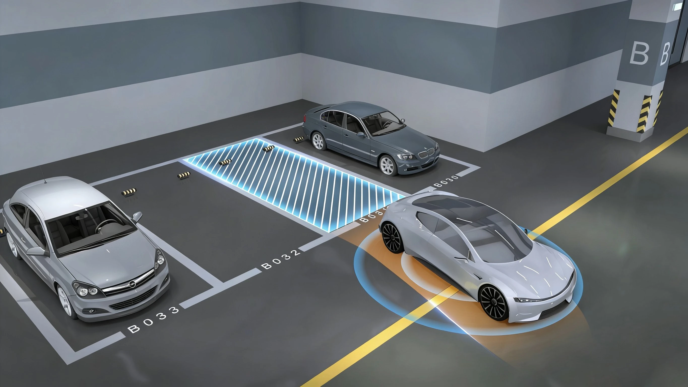

VT-Pilot® / 智能駕駛
泊車輔助
產品概覽
APA / RPA / HPA / AVP 圍繞車位識別、泊車路徑規劃與過程輔助，為複雜停車場景提供系統化泊車支援，提升低速泊車過程的可控性與便利性。

Capabilities
結合車輛感知資訊識別可用車位和周邊環境。
根據車位形態與車輛位置規劃泊車路徑，支援專案功能配置。
在泊車過程中持續關注周邊目標，為駕駛者提供輔助提示。
產品詳情
VT-APS 融合攝像頭、超聲波雷達、毫米波雷達及慣性導航，形成面向低速泊車過程的多源感知與控制方案，覆蓋駕駛員在車內輔助、車外遙控、路線複現及自主代客泊車等連續場景。
系統可識別可用車位，持續追蹤周邊車輛、行人和障礙物，規劃並更新泊車軌跡；面向陌生停車場時，可進一步拓展無需預先建圖和駕駛員協助的自主導航與泊車能力，並根據車型項目配置傳感器組合與控制策略。
駕駛員留在車內，系統識別合適車位並執行泊車操作。
駕駛員可在車外透過遙控密鑰或智能設備控制車輛完成泊車，支持狹窄車位場景。
記錄一次手動泊車路線，後續在駕駛員不操作車輛控制的情況下重複執行。
面向陌生停車場自主導航與泊車，並逐步拓展遠距離下車點至車位的自主泊車範圍。
Applications
Related Products
產品功能與配置可根據車型及專案需求定製，具體方案以專案評估為準。